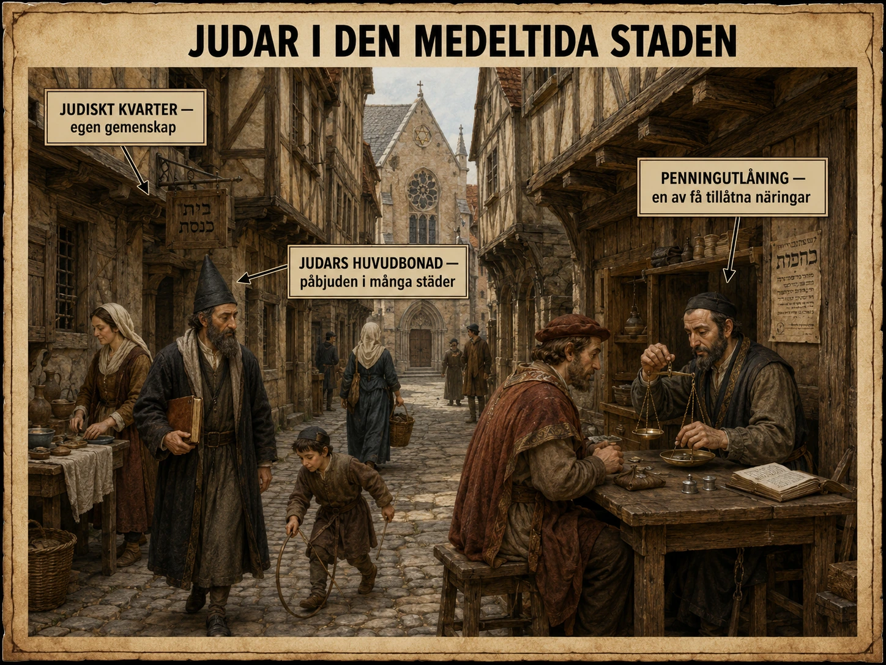

Staden sorterade människor
Den medeltida staden var en plats för handel, hantverk, kyrkor, marknader och murar. Men den var också en plats där människor sorterades. Vem fick bo innanför murarna? Vem fick äga jord? Vem fick gå med i ett skrå? Vem fick vittna i domstol? Vem räknades som en del av den kristna gemenskapen?
För Europas judar var staden både en möjlighet och en fara. Judar kunde vara viktiga för handel, kunskap, medicin, översättning, penningväxling och kredit. Samtidigt utsattes de för misstänksamhet, diskriminering, utvisningar och våld.
Deras historia i den medeltida staden visar hur ekonomi och religion kunde flätas samman på ett sätt som blev livsfarligt.
Judar i ett kristet Europa
Under medeltiden dominerades Västeuropa av kristendomen. Kyrkan var inte bara en religiös institution. Den var en del av samhällets struktur. Den påverkade utbildning, lagar, moral, kalender, äktenskap, död, fattigvård och politisk legitimitet.
I detta kristna majoritetssamhälle var judar en religiös minoritet. De hade egna församlingar, egna religiösa traditioner, egna lärda och egna sätt att organisera livet. Men de levde i samhällen där majoriteten ofta såg dem med teologisk misstänksamhet. Kristna teologer kunde anklaga judar för att ha avvisat Jesus, och det skapade en religiös grund för fördomar. Dessa fördomar fanns inte alltid på samma nivå överallt, men de kunde aktiveras i tider av kris.
Det farliga var att judar ofta stod nära makten men långt från tryggheten. Kungar, biskopar och furstar kunde skydda judiska grupper när de behövde dem. Men skyddet var beroende av makthavarens vilja. Om politiken förändrades, om skulder blev obekväma eller om folklig ilska växte kunde skyddet försvinna.
Varför fanns judar ofta i städer?
Städer var viktiga eftersom de erbjöd ekonomiska möjligheter. Där fanns handel, hantverk, pengar, skolor, kontakter och rättsliga institutioner. Men judars möjligheter var ofta begränsade.

Många kristna skrån var stängda för judar. Eftersom skråna kontrollerade hantverken kunde judar hindras från att bli skomakare, bagare, smeder eller vävare i samma system som kristna hantverkare. Jordägande kunde också vara svårt eller förbjudet. I ett samhälle där jord var knuten till feodala skyldigheter, kristna herrar och lokala rättigheter kunde judar ofta inte bygga sin ekonomi på jordbruk.
När vissa vägar stängdes blev andra viktigare. Därför kom en del judar att arbeta med handel, penningväxling, medicin, översättning och utlåning.
Det är avgörande att förstå detta rätt. Judar hamnade inte i penningyrken därför att det fanns något "judiskt" med pengar. De hamnade där eftersom det kristna majoritetssamhället ofta stängde andra dörrar och samtidigt behövde deras ekonomiska funktioner.
Det är en av historiens grymma ironier: ett samhälle kan först begränsa en minoritets möjligheter och sedan anklaga minoriteten för de roller den tvingats in i.
Kreditens obekväma nödvändighet
När städerna växte behövdes pengar. Men pengar behövdes inte bara för att köpa bröd på marknaden. De behövdes för större projekt. En köpman behövde kapital för att köpa varor långt innan han kunde sälja dem. En stad behövde pengar till murar, broar och hamnar. En furste behövde pengar till krig, hov och soldater. En bonde kunde behöva låna efter missväxt. En biskop kunde behöva finansiera byggandet av en kyrka.
Det medeltida samhället behövde alltså kredit. Men den kristna kyrkan var länge kritisk mot ränta. Att ta betalt för utlåning kunde betraktas som ocker. Eftersom judar inte lydde under kyrkans regler på samma sätt kunde judiska långivare i vissa områden få en särskild roll.
Det gjorde dem ekonomiskt nödvändiga. Men det gjorde dem också hatade.
Varför blir långivaren hatad?
Det finns en enkel psykologisk mekanism här. Den som lånar pengar är ofta tacksam i början, men bitter när skulden ska betalas tillbaka. Om skörden går dåligt, om handeln misslyckas eller om en furste slösar bort pengar kan långivaren framstå som fienden. Den skuldsatte ser inte alltid sitt eget beroende av krediten. Han ser kravet på återbetalning.
När långivaren dessutom tillhör en religiös minoritet blir situationen farligare. Ekonomisk ilska kan förvandlas till religiöst hat. Därför kunde judiska långivare hamna i en extremt utsatt position: de behövdes när pengar skulle lånas, och de hatades när pengar skulle betalas tillbaka.
Judar som kungens "egendom"?
I flera medeltida riken stod judar under särskilt kungligt eller furstligt skydd. Detta kunde verka positivt, men det betydde också kontroll. Härskaren kunde beskatta judiska grupper hårt, kräva avgifter eller använda dem som ekonomisk resurs.
I vissa sammanhang betraktades judar nästan som tillhörande kungens särskilda skyddssfär. Det innebar att de kunde få rätt att bo och bedriva verksamhet, men också att de var beroende av makten. Om kungen behövde pengar kunde han pressa dem. Om folket krävde åtgärder mot judar kunde han offra dem. Om han själv hade skulder kunde han vinna politiskt på att begränsa långivarnas rättigheter eller beslagta deras egendom.
Det är detta som gör situationen så instabil. Judar kunde ha privilegier, men privilegier är inte samma sak som säkerhet. Ett privilegium kan dras tillbaka.
Korståg, kriser och våld
Under korstågstiden ökade ofta hotet mot judiska grupper. När predikanter och korsfarare talade om kamp mot "de otrogna" kunde hatet också riktas mot judar i Europa. I samband med det första korståget drabbades flera judiska församlingar i Rhenlandet av våld. Detta visar hur snabbt religiös mobilisering kan vändas mot en minoritet nära hemmet.
Senare, under pestens katastrofer på 1300-talet, anklagades judar på vissa håll falskt för att förgifta brunnar. Detta var helt osant, men i en tid av massdöd sökte människor förklaringar. När sjukdomens verkliga orsaker var okända blev rykten och syndabockstänkande livsfarliga.
Syndabockstänkande fungerar ofta så här: ett samhälle drabbas av kris, människor blir rädda, orsakerna är svåra att förstå, en redan misstänkliggjord grupp pekas ut, och våldet framställs som försvar eller rättvisa. Det är ett mönster som återkommer i historien.
Ekonomisk stereotyp blir antisemitism
Medeltidens föreställningar om judar bidrog till senare antisemitism. Antisemitism betyder hat, fientlighet eller fördomar mot judar som grupp.
Under medeltiden växte flera farliga idéer fram: att judar var religiösa fiender, att judar var kopplade till pengar på ett misstänkt sätt, att judar inte riktigt hörde hemma i det kristna samhället och att judar kunde ges skulden för kriser. Dessa idéer var inte sanna. De var socialt skapade. Men när sådana idéer upprepas under lång tid kan de bli mycket kraftfulla.
Det gör detta ämne viktigt att undervisa om. Man måste visa hur fördomar skapas, inte bara säga att de finns.
Den historiska paradoxen
Den stora paradoxen är denna: det kristna samhället behövde judiska grupper för vissa ekonomiska funktioner, men ville inte erkänna dem som jämlika medlemmar av samhället.
Det behövde kredit, men föraktade ofta långivaren. Det begränsade judars yrkesmöjligheter, men anklagade dem för yrkena de hamnade i. Det gav skydd när det var lönsamt, men kunde överge dem vid kris. Det använde judar som ekonomisk resurs, men gjorde dem till religiösa syndabockar.
Det är därför judarnas situation i den medeltida staden måste beskrivas som både nödvändighet och förföljelse.
Varför ska vi läsa om detta?
Detta är inte bara en sidoberättelse till medeltidens stadsutveckling. Det är en central del av hur städer, pengar, religion och makt fungerade.
Judar i medeltida städer hjälper oss att förstå hur minoriteter kan göras beroende av makthavare, hur ekonomiska roller kan skapas av diskriminerande regler, hur skulder och räntor kan bli politiskt farliga, hur religiösa idéer kan användas för att skapa avstånd och hur syndabockar skapas i kris.
Det ger också en viktig bro till senare historia. Den antisemitism som växte fram i Europa under medeltiden försvann inte. Den förändrades, anpassades och återkom i nya former.
Därför är denna djupdykning inte bara en text om medeltiden. Den är en text om hur samhällen kan bygga fördomar — och om varför historisk förståelse är nödvändig för att känna igen dem.